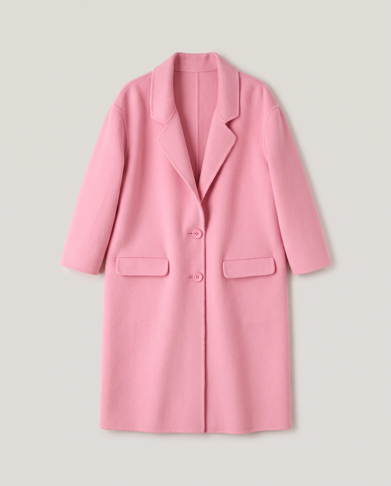
Photograph your garment
Lay it flat, hang it up or photograph it on a mannequin in even light.
FASHION PHOTOGRAPHY STUDIO
Start with a flat lay, hanger shot or phone photo. See how one garment can become a full set of images for your store, lookbook or campaign.
Open the local generation Studio
Interactive preview · No account or card needed
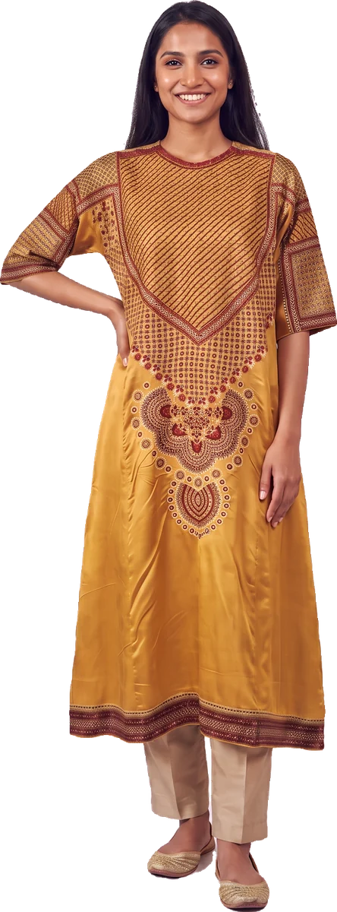

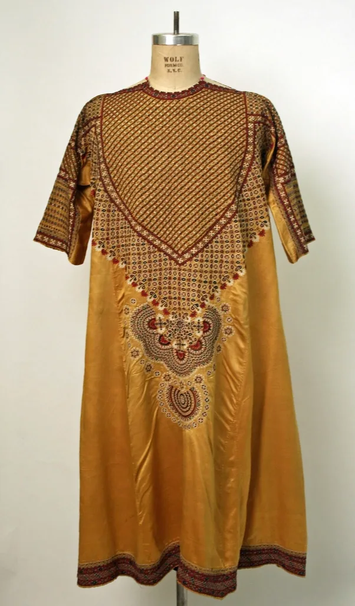
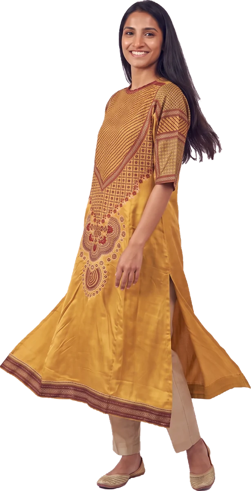
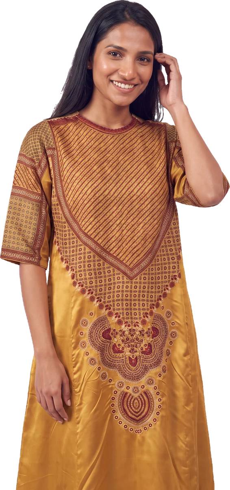
THE PRODUCT LISTING
Show how it fits, how it moves and what the fabric looks like up close. Each of these sample shots has a job to do on a product page.
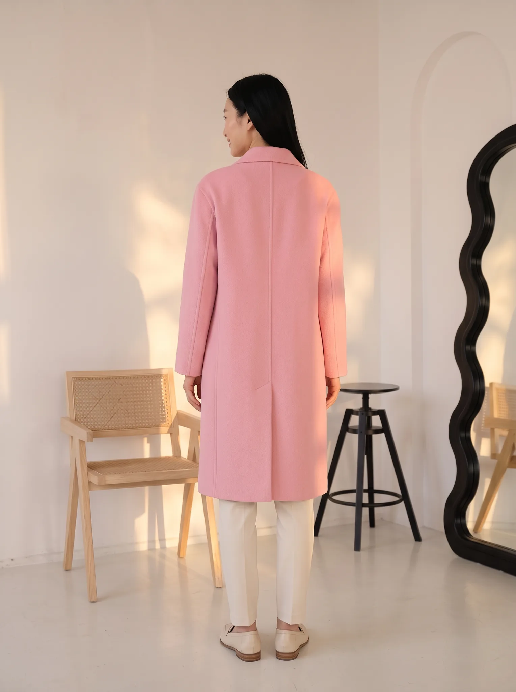
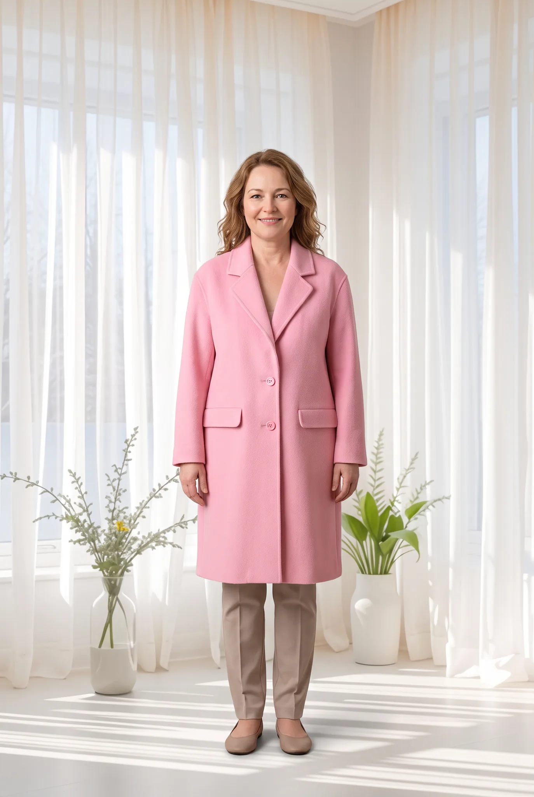
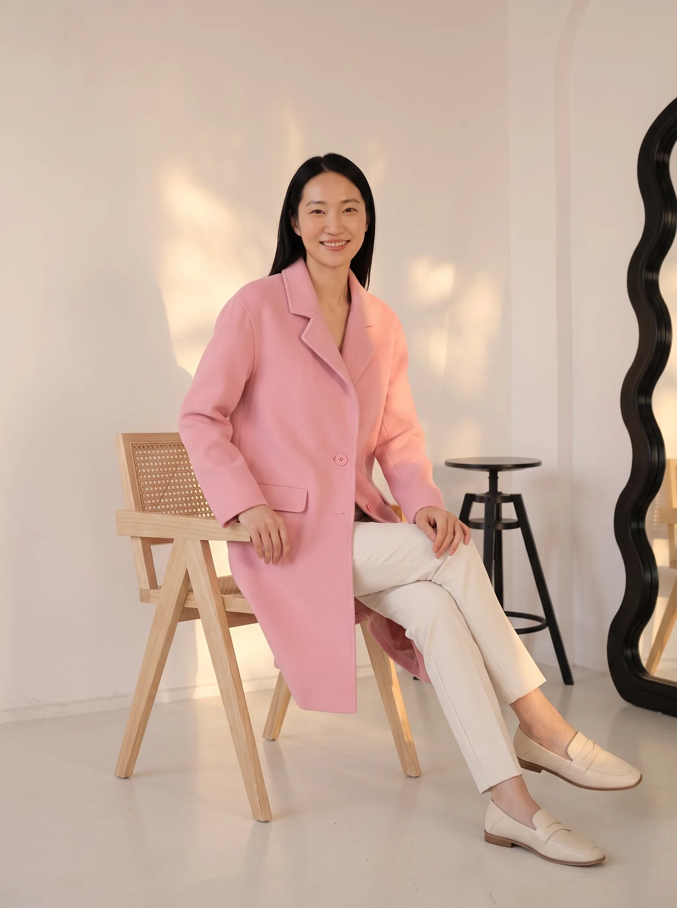
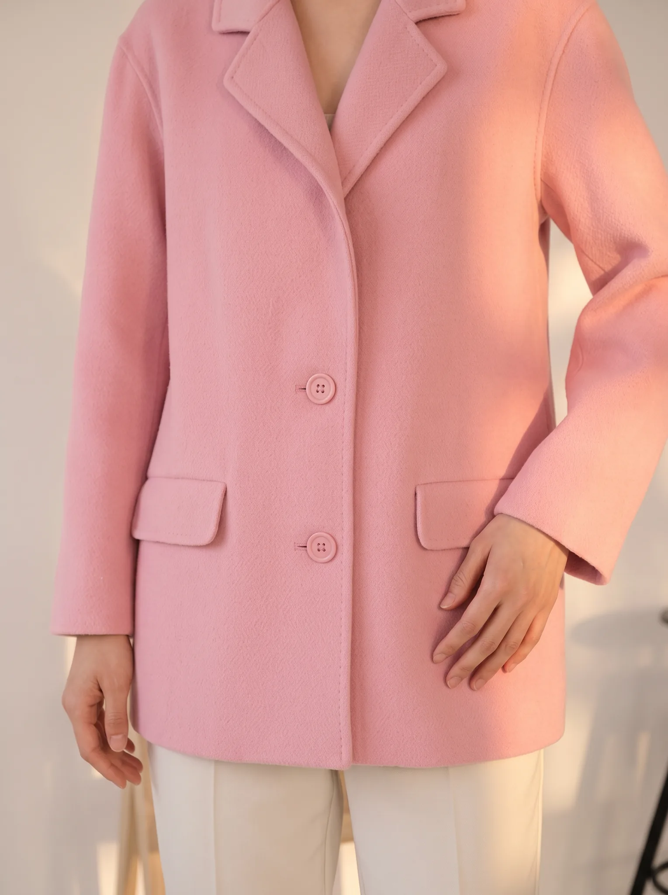
THE TRANSFORMATION
See how an original product photo looks alongside an on-model sample. Choose a garment, then move the divider to compare.
FROM CAMERA TO CATALOG
A clear front shot is enough to explore the workflow. Add back and side photos to document the parts your main image misses.

Lay it flat, hang it up or photograph it on a mannequin in even light.
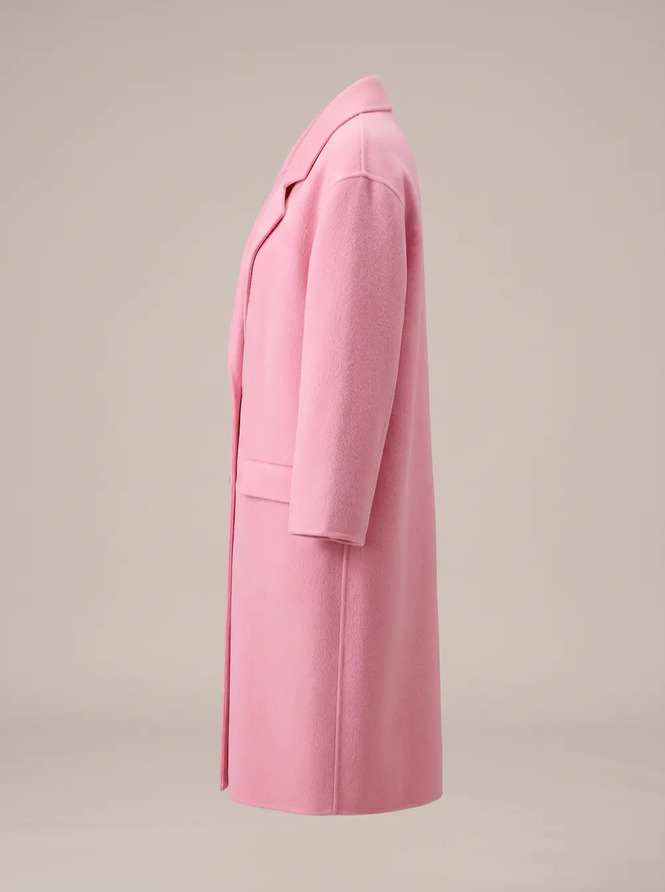
Use the labeled front, back, left and right slots in the Studio.
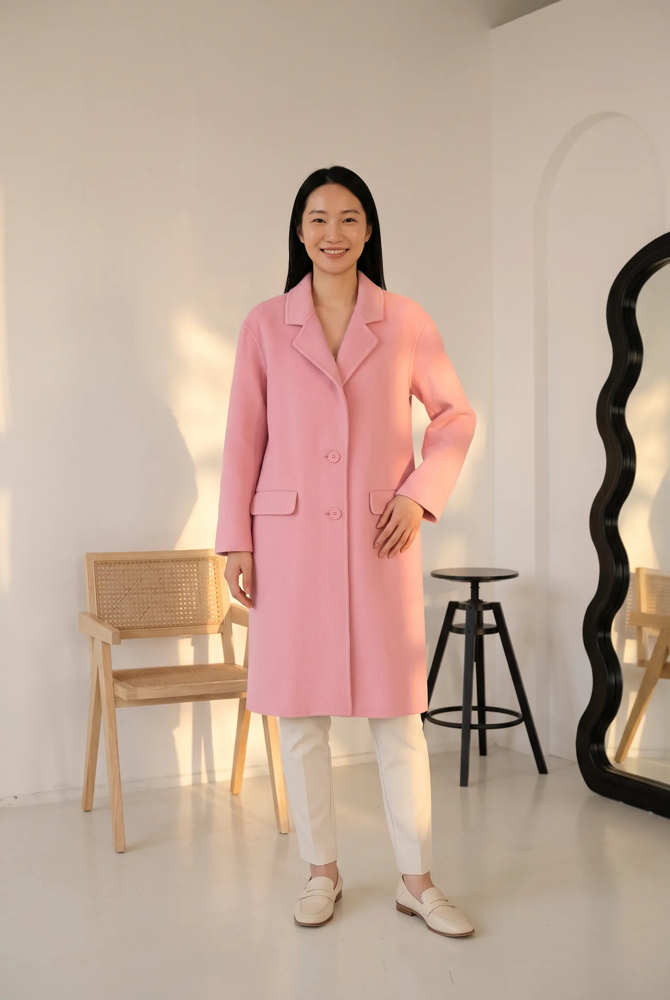
Choose a model, setting and pose. The preview lets you inspect and download prepared sample images.
THE STUDIO TOOLKIT
Explore a workflow for your product page, campaign or catalog.
GARMENT-ONLY PHOTOGRAPHY
Compare clean hanger, flat-lay, ghost mannequin and mannequin presentation styles.
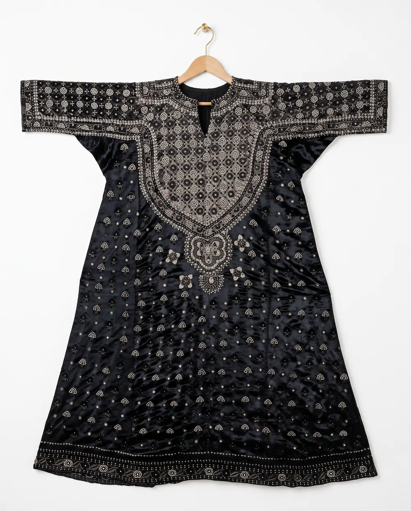
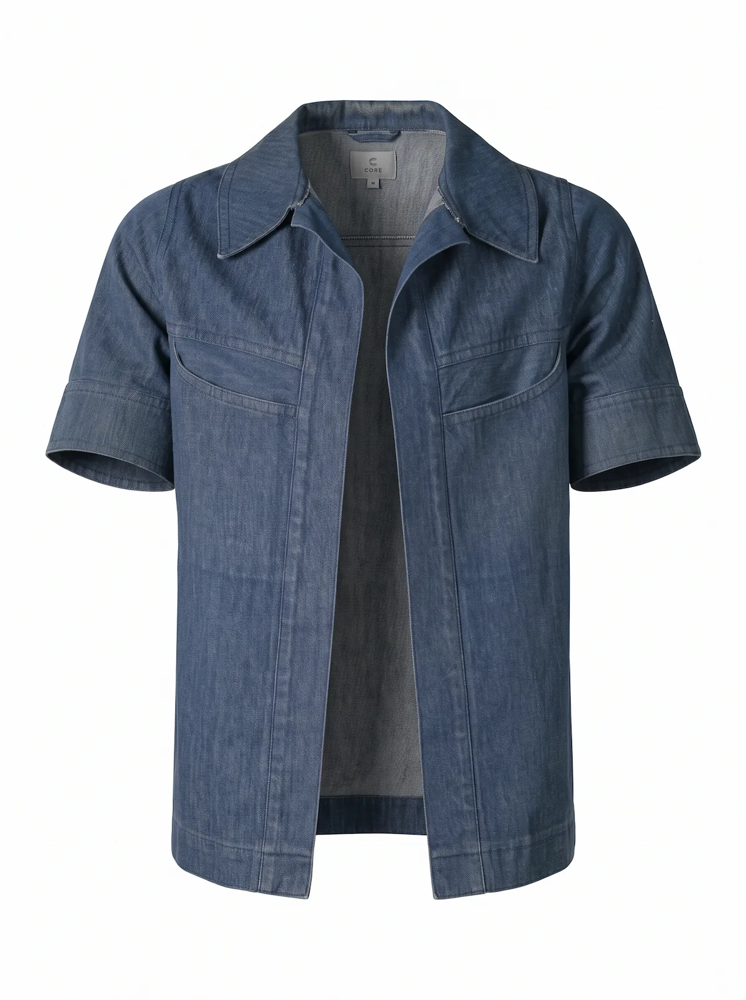
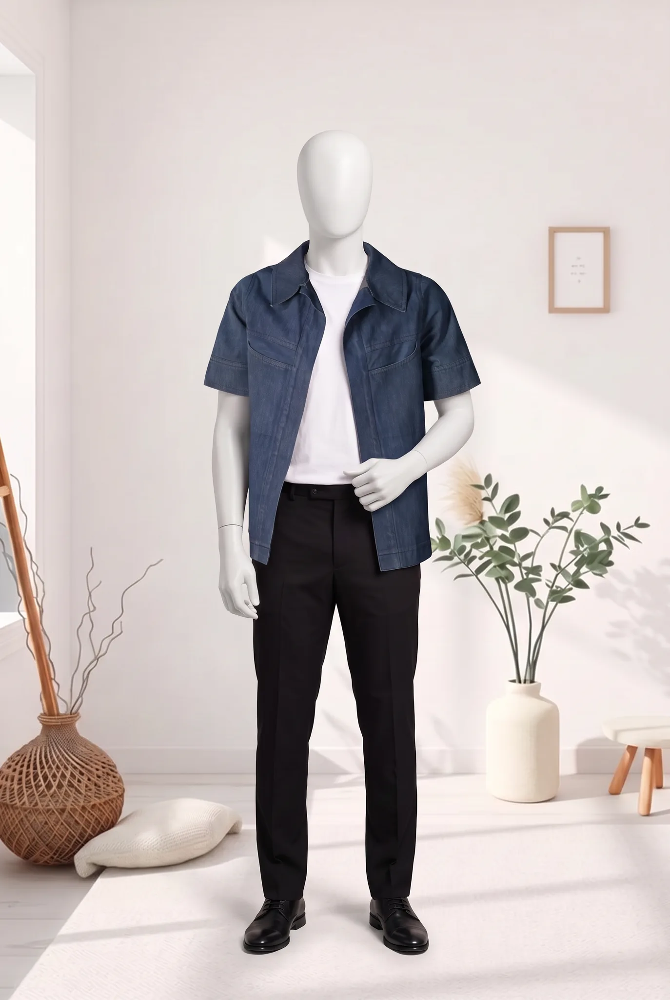
ANGLE DRAFTS
Explore a front, side, back and detail view from the same sample coat shoot.
MODEL LIBRARY
ASSET LIBRARY
Browse the sample library to see how garment references, model references and finished photos can be organized for a collection.
Open the sample StudioLOCAL STUDIO
Preview the workflow and download sample results. Your uploads stay in your browser during this demo.
These are prepared examples. Uploaded photos appear as references.
FIELD GUIDE
Use even light, keep the whole garment in frame and avoid filters. Take a close-up of any embroidery or print you need to check in the final photo.
Start with a clean front image, then add a back view, side view and fabric detail. Keep editorial poses for banners, ads and social posts.
Compare the output with the original. Check logos, print alignment, buttons, seams, color and hem length before you use an image in your store.
RESOURCES
Use clear photos in consistent lighting. Capture the front, back and both sides, keeping prints and details visible.
The local demo uses sample results. Your files serve as references in the preview and never leave the browser.
Yes. Open the local preview and try any sample workflow without signing in.
The localhost demo has no payments or usage charges.
Compare each image against a reference of the same angle. Pay special attention to labels, logo text, prints, seams and garment length.
Clothing brands, independent boutiques, online sellers and anyone planning a garment catalog.